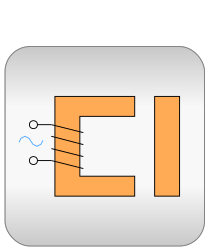

.
Modelica
.
Magnetic
.
QuasiStatic
Information
This package contains quasi static magnetic libraries
Contents
Name
Description

FluxTubes
Library for modelling of quasi static electromagnetic devices with lumped magnetic networks
FundamentalWave
Quasi static fundamental wave electric machines
Generated at 2018-10-20T17:02:17Z by
OpenModelica 1.13.0~dev-1491-g87333c1